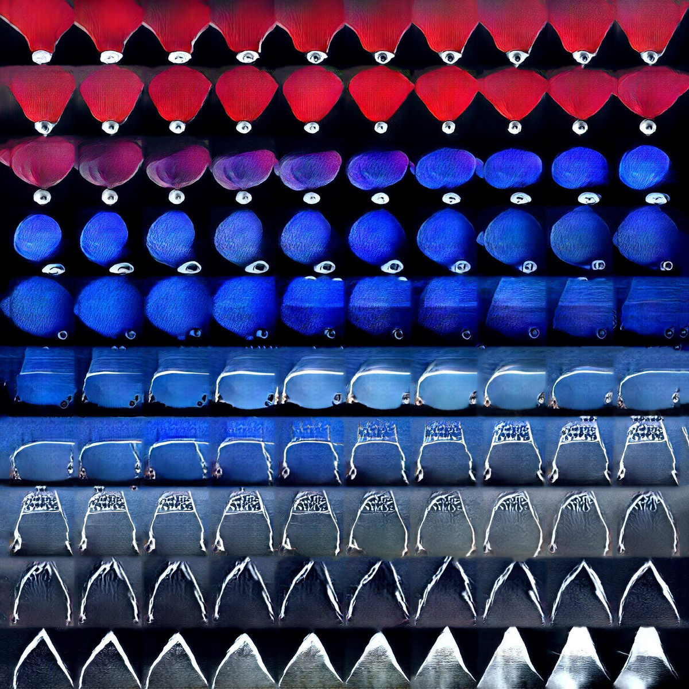
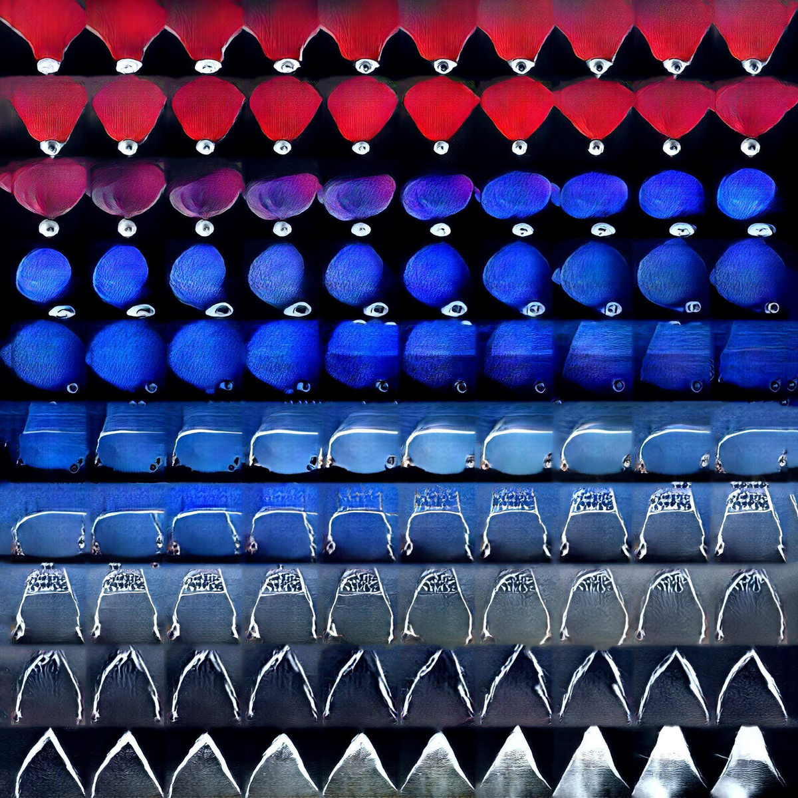

A Deep Convolutional Generative Adversarial Neural Network is an A.I. algorithm used to generate images based on how the human brain works. It is trained by being fed 14.2 million photographs, and mimics the way we learn by self-forming connections and making sense out of data.
Once the A.I. has built a map of neural pathways to comprehend the data set, it can start dreaming in the areas between and beyond what it has learnt from us. An abstracted digital subconscious conceiving of new images and visualising a ‘latent space’.
Extract from 30 minute film.
Materials
Public domain image dataset.
PixelCNN/Deep Convolutional Generative Adversarial Neural Network (PPGN) running on Amazon EC2 GPU Server


 
